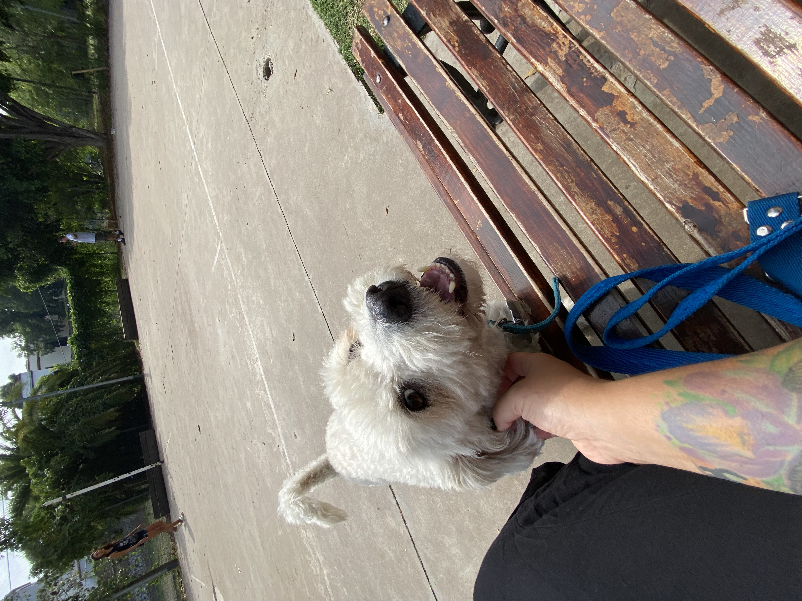
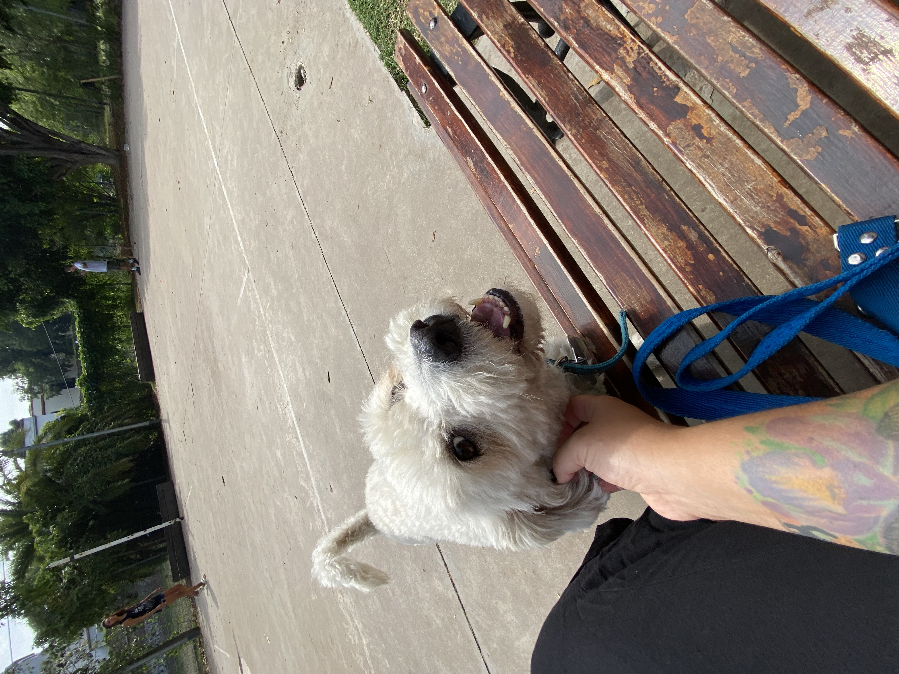
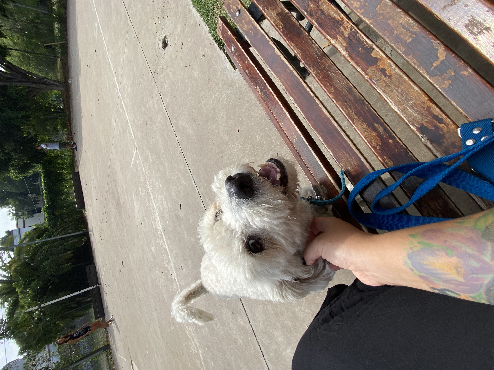

Habilidades e intereses :

 

Naci en Maracaibo, Venezuela en el ano 1995, tuve una infancia feliz y unos padres que siempre velaron por
cubrir
mis necesidades basicas, pude ir a la Universidad y graduarme de lo que para el momento era mi interes
principal. Cuando me gradue a las 20 anos me fui del pais buscando oportunidades, fue el momento mas
desafiante de mi vida, estuve en USA trabajando y tratando de decidir el pais donde queria vivir, luego fui
a Chile, y finalmente llegue a Argentina, a pesar de que todavia hago viajes a USA no estoy eligiendo ningun
otro pais para vivir fuera de Argentina, estoy haciendo un esfuerzo para mejorar economicamente y seguir
residiendo en este pais.
Estoy agradecida por todo el aprendizaje y los retos vividos desde que parti de mi pais hasta este momento.
Mi intencion actualmente es aprender , expandirme y crecer profesionalmente.
Atraigo talentos IT para forman parte del equipo Tech de una empresa multinacional, recluto y sourceo utilizando mi backgruong como psicoterapueta de personas migrantes y refugiadas, estoy orientando mi experiencia en entrevistas y mi capacidad de empatizar con otros para desempenar este nuevo cargo nuevo en mi vida.
Mi intencion en cambiar de la psicologia clinica al reclutamiento IT es acercarme cada vez mas al cambio de carrera que estoy queriendo realizar, para integrar mis dos mundo de interes, el ser humano y la tecnologia
